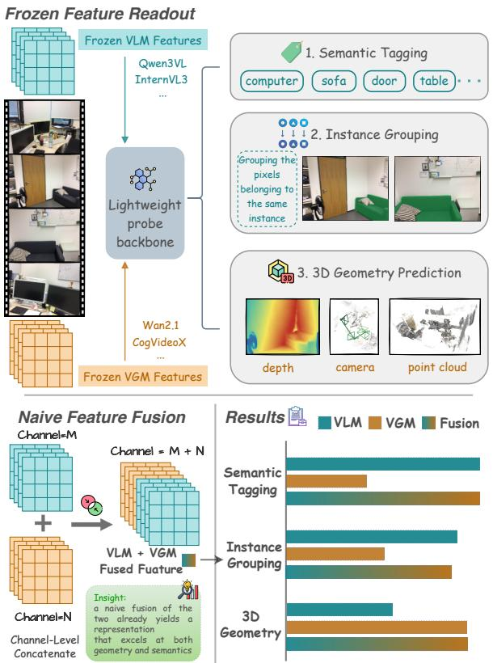

Figureure 2 · : Overview of our probing framework, where (A) is semantic tagging, (BFigure 2: Overview of our probing framework, where (A) is semantic tagging, (B) is instance grouping, and (C) is geometry prediction. We freeze each VLM or VGM, extract temporally aligned video features, and train lightweight probes with an identical backbone architecture and task-specific heads. It is notable that the probing backbone is unified in architecture, but the three task probes are trained separately.这张图概括 Which Pretraining Paradigm Better Serves 的整体方法流程。阅读时先看模块之间传递的训练信号，再看作者如何把目标拆成可优化的子问题。

Figureure 1 · : Top: Frozen VLM and VGM features are probed on three axes for spatiaFigure 1: Top: Frozen VLM and VGM features are probed on three axes for spatial intelligence. Bottom: Results show that VLMs excel at semantics and instances, VGMs excel at geometry, and simple fusion combines their strengths, further suggesting that the two representation families are complementary.这张图/表用于判断 Which Pretraining Paradigm Better Serves 的实验收益来自哪里。重点看替换、消融或跨模型设置下趋势是否一致，而不是只看单个最高分。
核心问题
它直接服务于“下一代通用视觉表征应该从语言监督、视频生成还是二者融合中学习”这个决策问题。
方法拆解
固定预训练 VLM 与 video generation model 的特征，用 lightweight probe 从 semantic tagging、instance grouping、3D geometry prediction 三个轴评估空间智能表征。
主要贡献
给出一个可操作的表征诊断框架，把“语义对象”和“几何结构”分开看，而不是只比较下游总分。
实验看点
摘要报告 VLM 更擅长语义标注和实例分组，VGM 更容易暴露 dense geometry 和 camera motion 信号；简单融合已经能同时提升几何和语义。